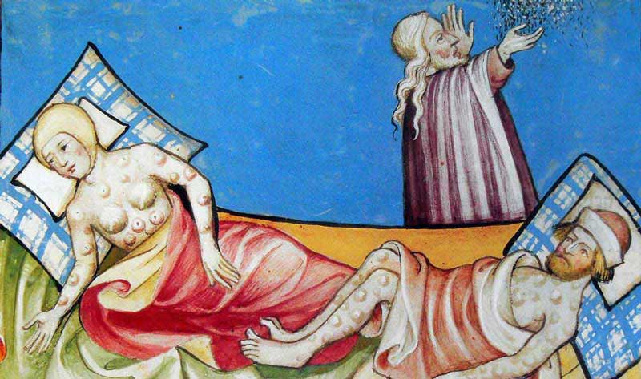

Mya Lam
The Black Death was a devastating global epidemic that hit Europe and Asia in the mid-1300s. The plague is thought to have originated in Asia and was likely spread by trading ships. The disease arrived in Europe when 12 ships from the Black Sea docked at the Sicilian port of Messina. Most of the sailors were dead, and those alive were covered in black spots and severely ill. Over the next five years, the Black Death would kill more than 20 million people across Europe. Some of the deadly symptoms of this disease included swelling of the groin or under the armpits, which would fill with blood and pus. This was followed by many other unpleasant symptoms such as fever, chills, vomiting, diarrhea, terrible aches, pains and eventually death. Additionally, the disease attacked the lymphatic system, causing swelling under the lymph nodes. If left untreated the infection would spread to the blood or lungs. Throughout Europe, the Roman Catholic Church explained the plague as god’s punishing the sins of people. The church organized religious marches, pleading for god to stop the disease. Many people did not understand the biology of the Black Death so they too believed that it was a punishment from god. Additionally, this led to the belief that the only way to overcome the plague was to win god’s forgiveness. Many Jews were often blamed for the outbreaks, leading to massacres and violence. The Black Death showcases a movement towards faith, due to the belief system that god created the disease as a punishment for human sins.

(Depiction of people put on bed-rest because of the Black Plague.)